Example Config for Check Point VM in AWS
In this document, we provide an example to set up the Check Point Security Gateway instance for you to validate that packets are indeed sent to the Check Point Security Gateway for VPC-to-VPC and from VPC to internet traffic inspection.
|
Note
Firewall and Security Gateway word will be used interchangeably in this document. Both refers to Check Point Security Gateway product. |
Creating a Security VPC/VNet
We recommend that you use the Aviatrix Useful Tools to create a VPC/VNet for a FireNet deployment.
Select the Aviatrix FireNet VPC option when creating a security VPC/VNet.
| Aviatrix FireNet VPC Public Subnet | Description |
|---|---|
-Public-gateway-and-firewall-mgmt-AZ-a |
A /28 subnet (public in AWS/GCP/OCI) in AZ a for FireNet Gateway and firewall instance management interface. |
-Public-gateway-and-firewall-mgmt-AZ-b |
A /28 subnet (public in AWS/GCP/OCI) in AZ b for FireNet HA Gateway and firewall instance management interface. |
-Public-FW-ingress-egress-AZ-a |
A /28 subnet (public in AWS/GCP/OCI) in AZ a for firewall instance’s egress interface. |
-Public-FW-ingress-egress-AZ-b |
A /28 subnet (public in AWS/GCP/OCI) in AZ b for firewall instance’s egress interface. |
4. Capturing Client IP
4.1 Using AWS ALB
AWS ALB automatically preserves client IP address, you can find the client IP address in the HTTP header field "X-Forwarded-For".
To view the client IP address in the access log, follow the instructions in How to save client IP in access logs.
Example Config for Check Point VM in AWS
In this document, we provide an example to set up the Check Point Security Gateway instance for you to validate that packets are indeed sent to the Check Point Security Gateway for VPC-to-VPC and from VPC to internet traffic inspection.
|
Note
Firewall and Security Gateway word will be used interchangeably in this document. Both refers to Check Point Security Gateway product. |
Managing Transit FireNet
Follow Aviatrix Transit FireNet Workflow to deploy manage FireNet policy, and firewall instances.
-
Manage a spoke inspection policy for the Application spoke VNET by referring to step Manage Transit FireNet Policy as the following screenshot.
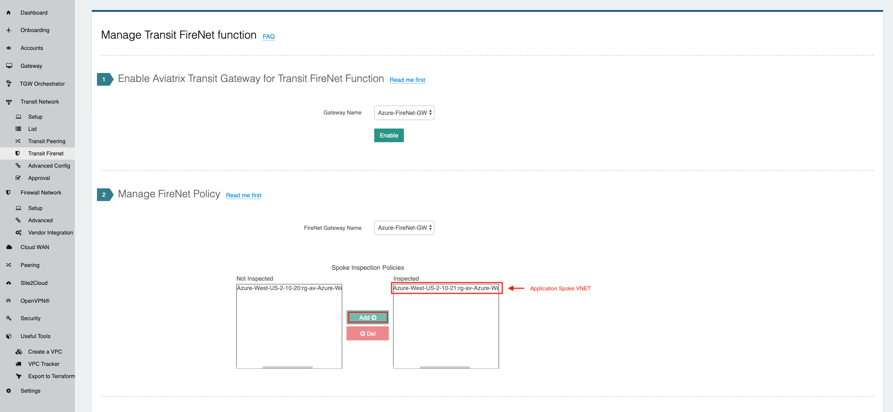
-
Deploy firewall instance in Aviatrix Transit VNet by following the step Deploy Firewall Network as the following screenshot.
Here is the Firewall information in this example for your reference. Please adjust it depending on your requirements.
| Example setting | Example value |
|---|---|
Firewall Image |
Palo Alto Networks VM-Series Next-Generation Firewall Bundle 1 |
Firewall Image Version |
9.1.0 |
Firewall Instance Size |
Standard_D3_v2 |
Management Interface Subnet |
Select the subnet whose name contains "gateway-and-firewall-mgmt" |
Egress Interface Subnet |
Select the subnet whose name contains "FW-ingress-egress" |
Username |
Applicable to Azure deployment only. “admin” as a username is not accepted. |
Attach |
Check |
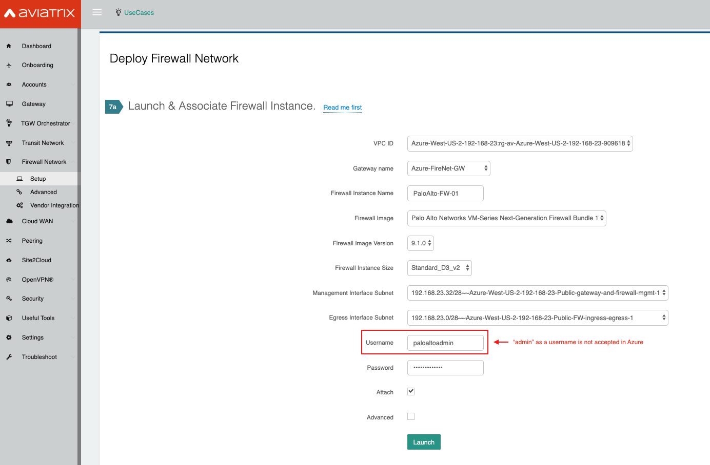
Set up firewall configuration by referring to Example Config for Palo Alto Network VM-Series.
|
Note
In Azure, instead of using pem file, please use username/password to ssh into firewall instance to reset password if needed. Additionally, use the same username/password to login into firewall website. |
Launching an Apache2 Web server in Application Spoke VNET
In Application Spoke VNET, create an Ubuntu Server 18.04 LTS virtual machine and install Apache2 HTTP Server with custom port 8080.
| Example setting **Ex | ample value** |
|---|---|
Protocol HTTP Port 8080 |
|
Note
Refer to Install The Latest Apache2 HTTP Server ( 2.4.34 ) On Ubuntu 16.04 | 17.10 | 18.04 LTS Servers to install Apache2 HTTP Server. Refer to How To Change Apache Default Port To A Custom Port to use custom port 8080. |
Creating Azure Application Gateway
In Ingress Spoke VNET, create an Azure Application Gateway. Make sure you select the following:
-
Create an Azure Application Gateway in Ingress Spoke VNET.
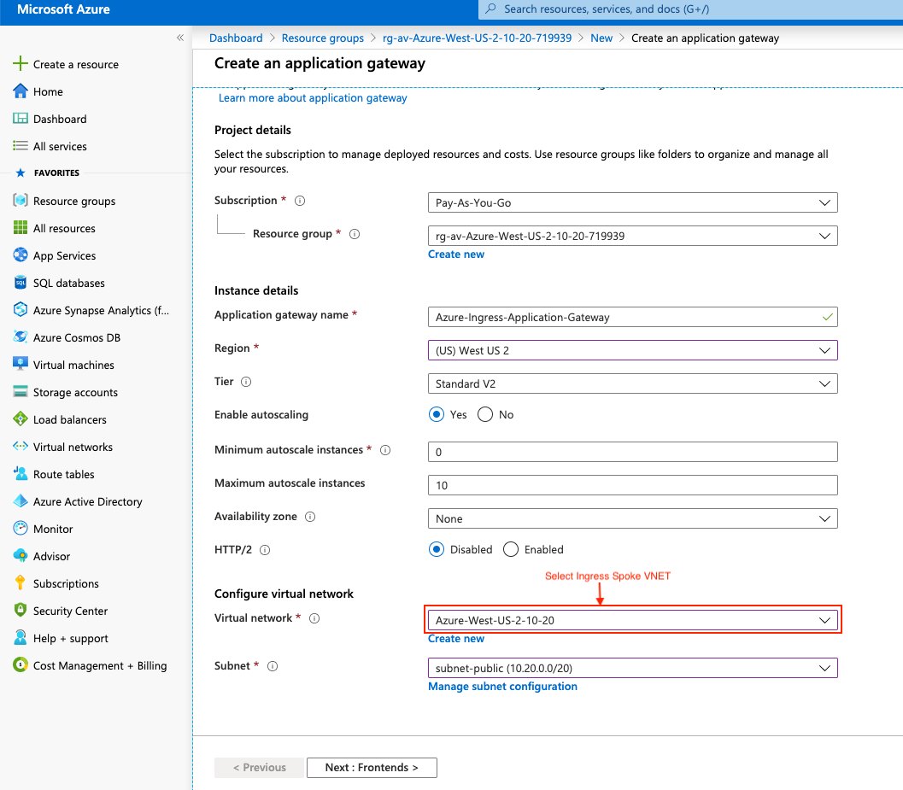
-
Select "Public" for Frontend IP address type in section Frontends.
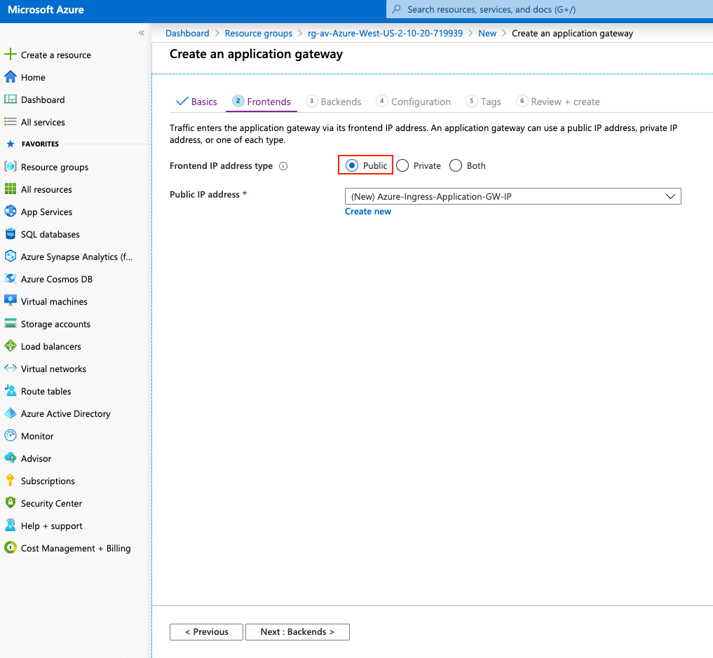
-
Select "IP address or hostname" for Target type and configure the private IP of Apache2 Web Server for Target in section Backends.
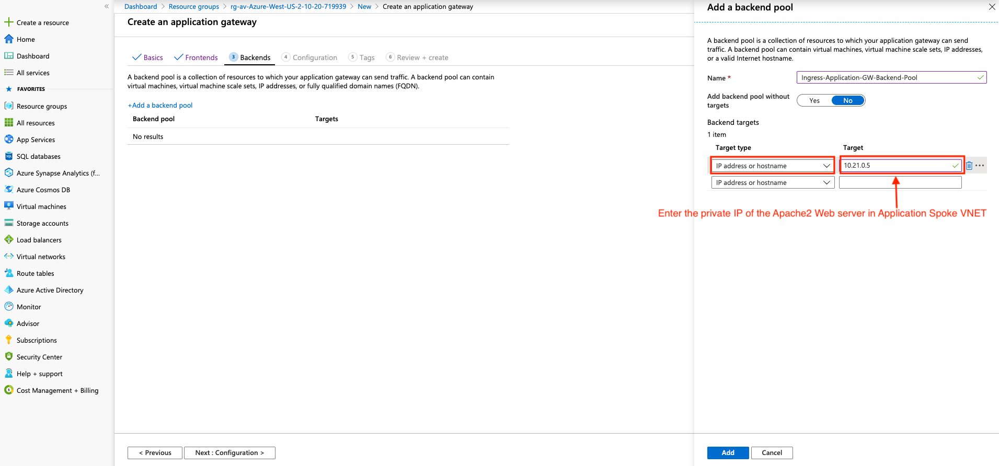
-
Add a routing rule on Listener depending on your requirement.
Example setting **Ex ample value** Frontend IP Public Protocol HTTP Port 80
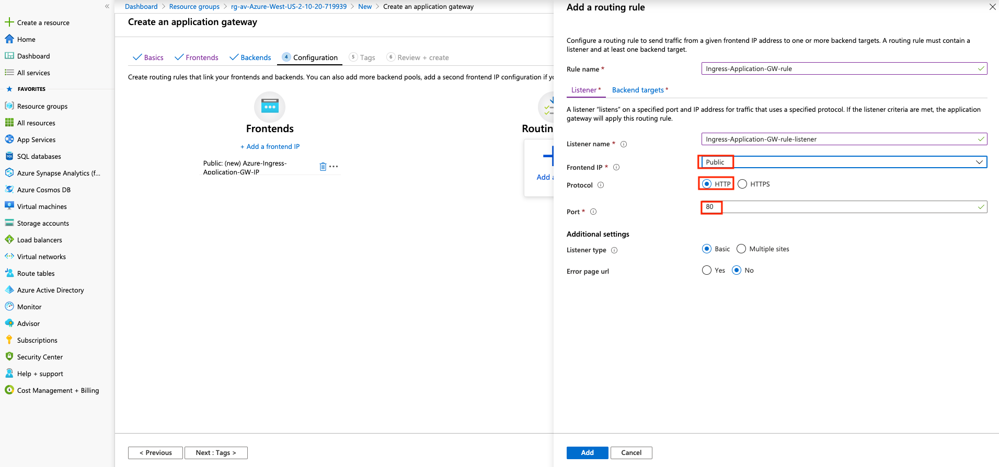
-
Add a routing rule on Backend targets and create a HTTP setting depending on your requirement.
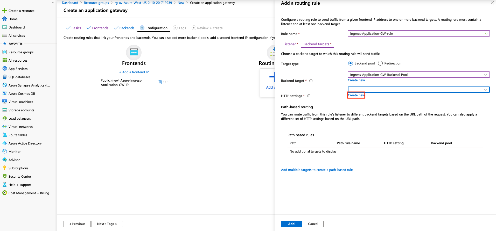
-
Click Create new on HTTP settings.
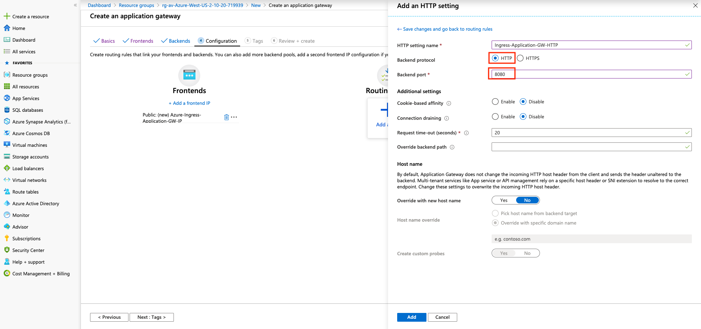
| Example setting **Ex | ample value** |
|---|---|
Backend protocol HTTP Backend port 8080 |
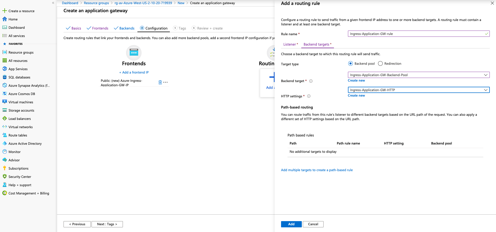
Review the configuration and click Create on the Review + create page.
Refer to the instruction Quickstart: Direct web traffic with Azure Application Gateway - Azure portal.
=== Ready to Go
Make sure Server (backend pool) status is in Healthy state from the Azure portal page Application Gateway > Backend health.
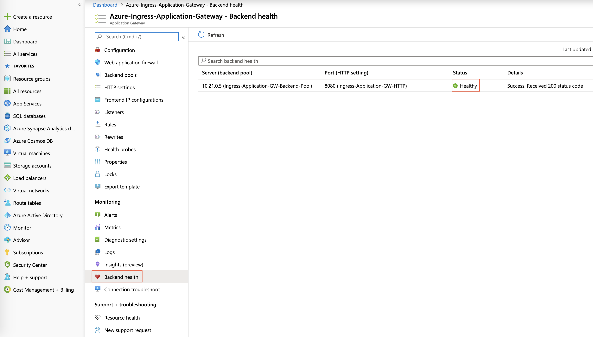
Run a http request targeting on the Azure Application Gateway Public IP or DNS name.
Find the Frontend public IP address of Azure Application Gateway from the Azure portal page Application Gateway > Overview.
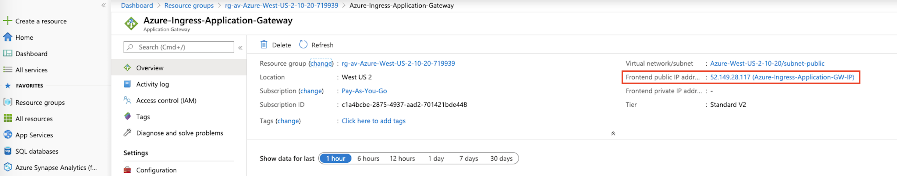
Copy the Frontend public IP address of Azure Application Gateway and paste it on a browser from your laptop/PC.
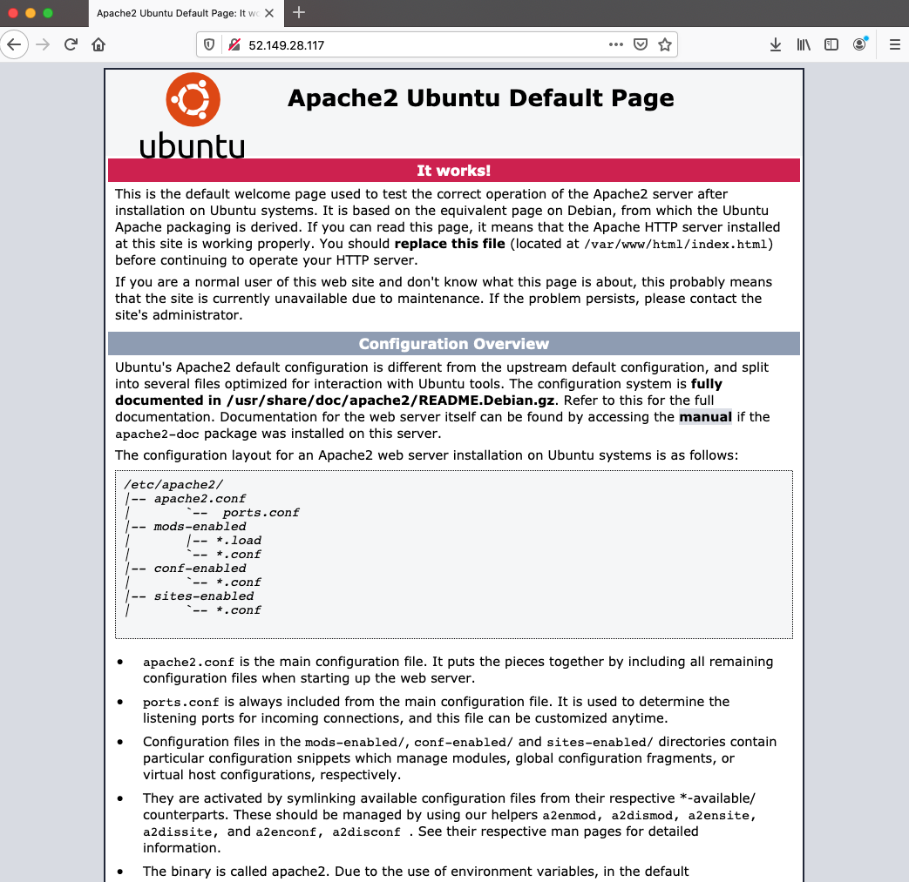
Perform tcpdump with port 8080 on Apache2 Web server.
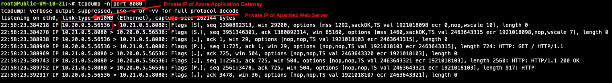
Furthermore, Azure Application Gateway automatically preserves client original IP address in the HTTP header field "X-Forwarded-For (XFF)". Here is an HTTP packet example which is opened with Wireshark tool for your reference:
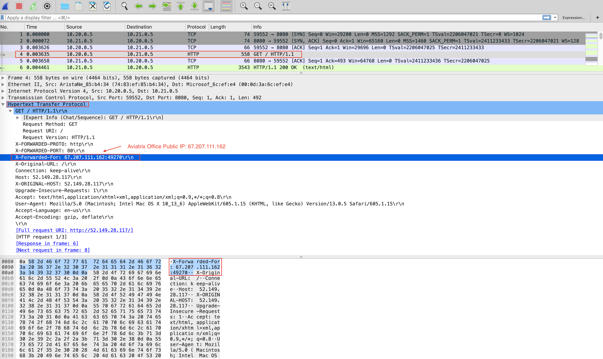
=== Viewing Traffic Log on Firewall
You can view if traffic is forwarded to the firewall instance by logging in to the Palo Alto VM-Series console. Go to Monitor > Logs > Traffic. Perform http/https traffic from your laptop/PC to the public IP or domain name of Azure Application Gateway.
=== Capturing Client IP in Logs
To view the client IP address in the access log, follow the instructions in How to save client IP in access logs.
Find and open Apache configuration file.
#vim /etc/apache2/apache2.confIn the LogFormat section, add %{X-Forwarded-For}i as follows:
... LogFormat "%{X-Forwarded-For}i %h %l %u %t \"%r\" %>s %b \"%{Referer}i\" \"%{User-Agent}i\"" combined LogFormat "%h %l %u %t \"%r\" %>s %b" common ...Save your changes.
Reload the Apache service.
#systemctl reload apache2Review the public/original client IP on apache2 access log.
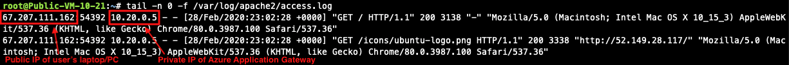